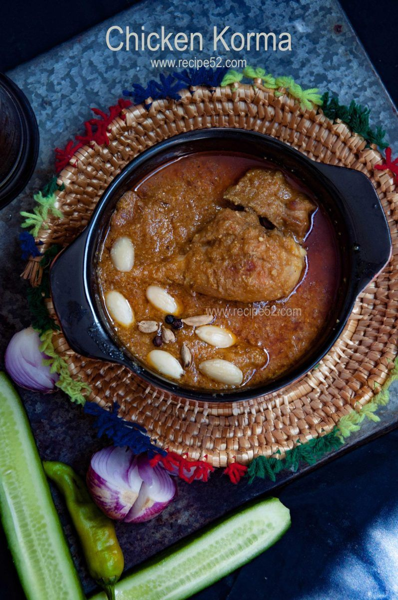

How to cook deliciously wholesome Chicken Qourma

About Chicken Korma Recipe | Mughlai Chicken Korma Recipe
Subbalakshmi Khan, a professional dancer cooks up a Mughlai chicken korma with generous amounts of spices and Indian flavours. Korma is a gravy dish that is usually made with yogurt, lots of nuts and spices. A Mughal era original, Chicken Korma is the perfect dinner party dish that is easy, quick and a no fuss recipe.
Ingredients of Chicken Korma Recipe:
Chicken cooked in a host of spices such as cardamom, cloves, garlic, coriander, chili powder, ginger paste along with a mixture of fried onions and yogurt. Flavoured with saffron, this chicken korma is the perfect dinner dish to cook tonight.
A list of Ingredients required to make Chicken Qourma
- 1/2 Kg Chicken
- 1 Cup Oil
- 2-3 tsp ghee
- 8-10 Cardamoms
- 6-7 Cloves
- 2 tbsp of Garlic
- 1 tbsp coriander powder
- 1 tbsp chili
- To taste salt
- 1 tsp ginger paste
- 1 cup yoghurt
- 2 onions (fried, purre this with the yogurt), sliced
- 1 tsp garam Masala
- Few strands of saffron (mixed with 3 tsp of water)
- For garnishing coriander leaves, chopped
How to make Chicken Qourma
- Heat the vegetable oil into the pan, then put a dollop of ghee.
- Put cardamom, cloves, garlic and fry the mix properly.
- Then add the chicken and let it cook for about 2-3 minutes.
- Keep stirring it.
- Once it becomes brown, add coriander and chili powder.
- Add salt to taste.
- Add ginger paste, mixture of fried onions and yogurt, let it cook for a minute.
- Then put garam masala and saffron for flavor.
- If the gravy is too thick add little bit of water before covering it. The masala should fuse well with the chicken.
- Cover it and give it some time to cook on slow fire. Let it simmer for about 10-15 minutes.
- Keep stirring occasionally.
- Serve hot, garnished with coriander leaves.
Key Ingredients:chicken, oil, ghee, Cardamoms, Cloves, garlic, coriander powder, chili, salt, ginger paste, yogurt, onions (fried, puree this with the yogurt), garam masala, Few strands of saffron (mixed in 3 tsp of water), coriander leaves
Back to homepage